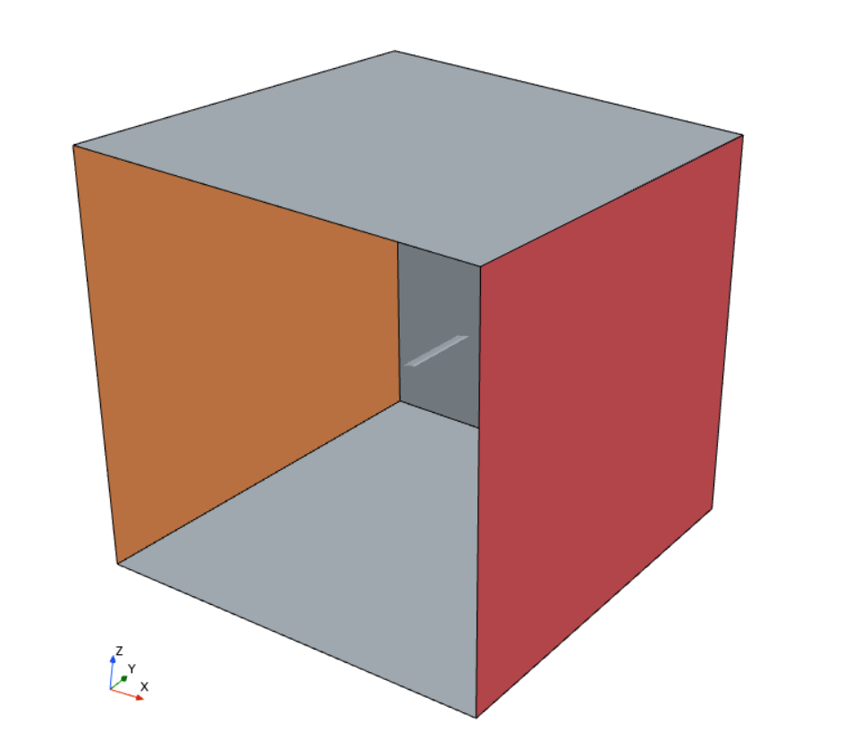
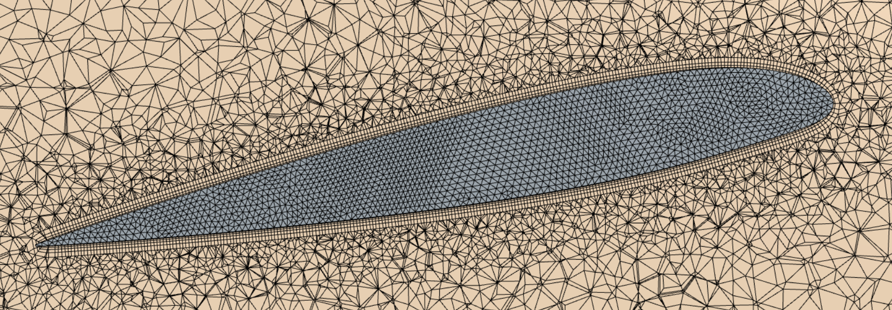
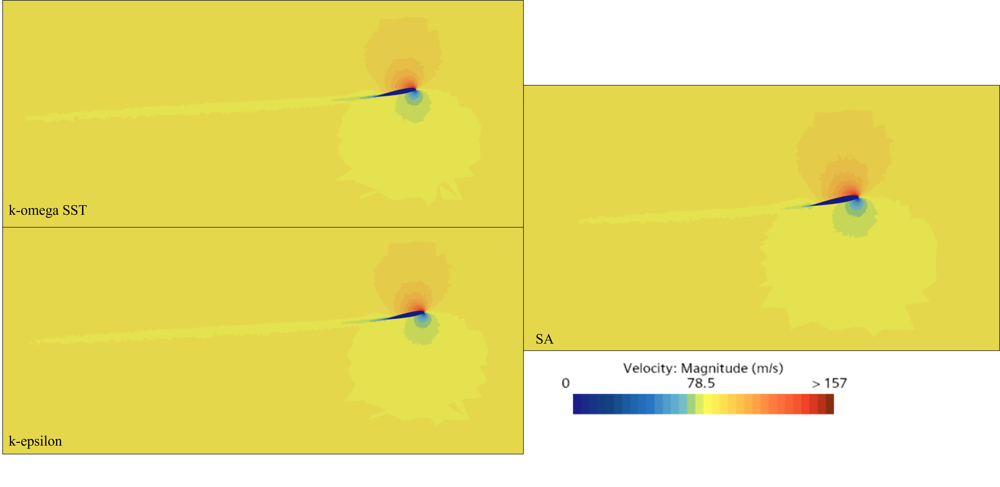
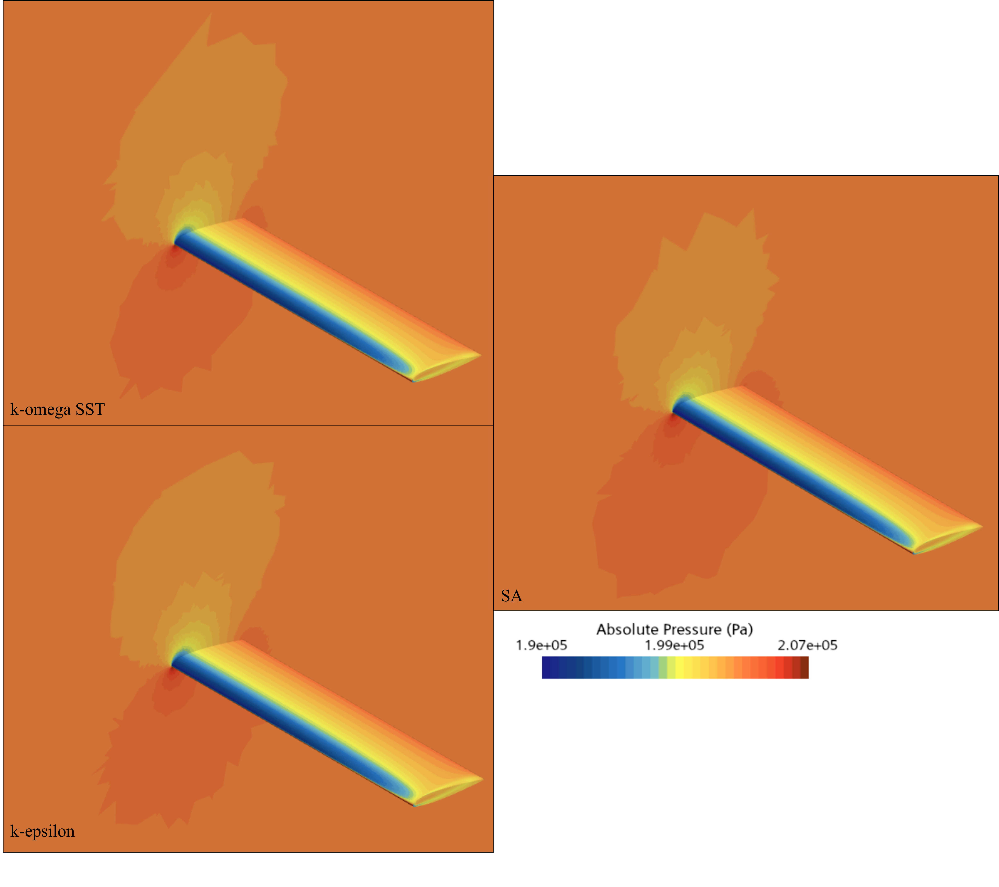
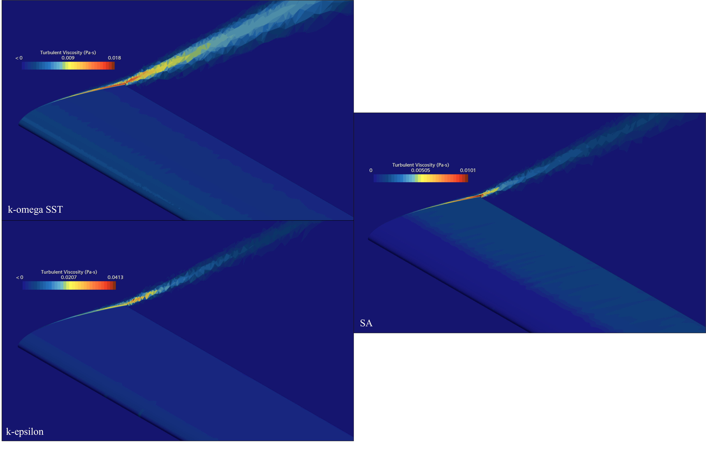

Star-CCM+ · RANS
Turbulence-Model Comparison on a Finite Wing
- Objective
- Measure how much the choice of RANS turbulence model changes predicted lift, drag, and boundary-layer behavior on a finite wing when everything else in the setup is held fixed.
- Tools
- Star-CCM+, Siemens NX.
- Models
- Spalart-Allmaras, k-ε, k-ω SST.
- Result
- Spalart-Allmaras predicted roughly 3% higher lift and 8% lower drag than the two-equation models, while k-ε and k-ω SST agreed with each other within 1%. Peak eddy viscosity differed by a factor of four across the three models.
Problem
RANS solvers do not resolve turbulence directly. They model it, and the model is a choice the engineer makes rather than something the physics settles. Different models close the equations differently, so the same geometry, mesh, and boundary conditions can produce different lift and drag depending only on which one is selected.
This study isolates that variable. A finite wing was simulated three times with identical setup, changing nothing but the turbulence model, to see how far the predictions spread and where the models actually differ. The geometry is a NACA 23012 wing with a 10 m span and 1.5 m chord at 10 degrees angle of attack, an airfoil used on propeller aircraft such as the Gulfstream 690C.
The three models
All three models tested here work the same way at a basic level. Turbulence mixes momentum through the flow far more aggressively than molecular viscosity alone would, so rather than simulating every eddy, these models treat that mixing as if the fluid were simply thicker in the regions where turbulence is strong. The extra thickness is called eddy viscosity, and it is not a property of the air. It varies from point to point depending on how turbulent the local flow is, and calculating it is the entire job of a turbulence model. Where the three models differ is in how they arrive at that number.
Spalart-Allmaras solves a single transport equation for the eddy viscosity directly. It was developed at Boeing specifically for external aerodynamics, and it is cheap to run and forgiving about near-wall mesh quality. It performs well when the flow stays attached to the surface, which makes it a common choice for wings at cruise conditions, but it is less reliable once the flow starts separating.
k-ε solves two equations instead, tracking the energy held in the turbulence and the rate at which that energy dissipates, then combining them to get eddy viscosity. It is well behaved away from surfaces and is a long-standing general-purpose choice, but it needs help very close to the wall and is known to struggle where the pressure rises along the flow direction, which is exactly the condition that leads to separation.
k-ω SST is a hybrid built to fix that weakness. It uses a k-ω formulation near the wall, which handles rising pressure and separation better, and blends into k-ε further out, where k-ω on its own is overly sensitive to freestream conditions. That combination is why it has become a default for external aerodynamics in industry, particularly for high-lift and separated cases.
For this case, a finite wing at 10 degrees angle of attack, the flow should be mostly attached with an adverse pressure gradient developing toward the trailing edge. That puts it in territory where all three models are defensible choices, which is what makes it a useful test: the differences that show up are not the result of pushing one model outside the range it was built for.
Method
Geometry and domain
The wing was built in NX from NACA 23012 coordinates scaled to a 1.5 m chord, exported as IGES, and subtracted from a 50 m cube to create the far field. The wing has no taper, which keeps the geometry simple enough that any differences in the results trace back to the turbulence model rather than to complex flow features.
Flow conditions are air at 25 °C, with density 1.184 kg/m3 and kinematic viscosity 15.52×10−6 m2/s. The inlet is a uniform 85 m/s velocity, roughly the cruise speed of a larger propeller aircraft, with a pressure outlet at atmospheric pressure, slip conditions on the surrounding far-field walls, and no-slip on the wing. At those conditions the chord Reynolds number is about 8.2×106.

Mesh
The domain uses an automated tetrahedral mesh with a 0.2 m base size, coarsening to 1 m in the far field and refined to 0.01 m on the wing surface. Leading-edge curvature was resolved by raising the points-per-circle setting to 100, and a wake refinement region extends 15 m behind the trailing edge at 0.05 m to capture the flow leaving the wing.
Prism layers were sized from the turbulent boundary-layer thickness rather than picked arbitrarily. Using the flat-plate estimate δ99 ≈ 0.37x / Rex1/5 at the chord length gives about 0.023 m, which was set as the total prism-layer thickness with 5 layers inside it.

Solver
All three cases were run as steady, incompressible RANS with identical settings, stopping at 500 iterations. The turbulence model is the only thing that changes between runs.
Results
| Model | Lift (N) | CL | Drag (N) | CD |
|---|---|---|---|---|
| Spalart-Allmaras | 57258 | 0.892 | 3308 | 0.0516 |
| k-ε | 55768 | 0.869 | 3600 | 0.0561 |
| k-ω SST | 55523 | 0.863 | 3562 | 0.0555 |
The two-equation models land close to each other, within 1% on every quantity, while Spalart-Allmaras separates from both. It predicts about 2.6% more lift than k-ε and 3% more than SST, and its drag is 8.8% lower than k-ε and 7.7% lower than SST. The spread in drag is roughly three times the spread in lift, which follows from where the models do their work: drag on a wing at this Reynolds number is dominated by what happens inside the boundary layer, and that is exactly what the turbulence model controls.
The velocity and pressure fields show the same grouping. Spalart-Allmaras produces a larger low-velocity region beneath the wing and a correspondingly larger high-pressure region, which is consistent with the higher lift it predicts. Its wake is also noticeably shorter than the wakes from the two-equation models. Between k-ε and SST the fields are close to indistinguishable by eye.


The eddy viscosity fields are where the models diverge most. Peak turbulent viscosity is 0.0413 Pa·s for k-ε, 0.018 for k-ω SST, and 0.0101 for Spalart-Allmaras, a factor of four between the highest and lowest. The distributions differ as well: SST produces the widest wake with high turbulent viscosity at and behind the trailing edge, k-ε and SA produce tighter wakes, and on the wing surface itself SA concentrates eddy viscosity over the rear half while the two-equation models put more near the leading edge.
That contrast is the most useful result here. The integrated forces differ by a few percent, which looks tolerable, but the underlying turbulence fields differ by several hundred percent. The models are behaving quite differently internally and partially compensating by the time everything is integrated into a force coefficient.

Conclusion
Changing only the turbulence model moved predicted drag by nearly 9% and lift by about 3% on an otherwise identical setup. The one-equation model separated from the two-equation pair more than they separated from each other, and the eddy viscosity fields showed differences far larger than the force coefficients suggest. For any analysis where drag is the quantity that matters, the model is not a detail to leave at its default.
This study shows that the models disagree, not which one is correct. There is no experimental or wind-tunnel data in the comparison, so nothing here establishes a true value to measure against, and the closest thing to a reference is that the two-equation models agree with each other. The runs also stopped at a fixed 500 iterations rather than at a convergence criterion, so the differences include whatever iterative error remained. No grid-convergence study was run, which is the larger gap: mesh-induced error is unquantified and could be the same size as the model differences being reported. Five prism layers across the full boundary-layer thickness is coarse, and y+ was not recorded, so near-wall resolution is likely in the range where wall treatment matters, which is itself one of the things that differs between these models. A stronger version of this study would fix the mesh question first, then compare against measured data.